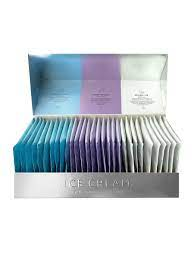
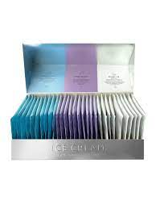
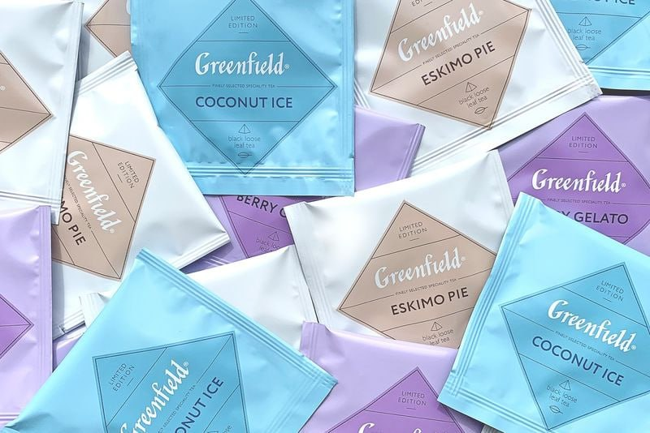
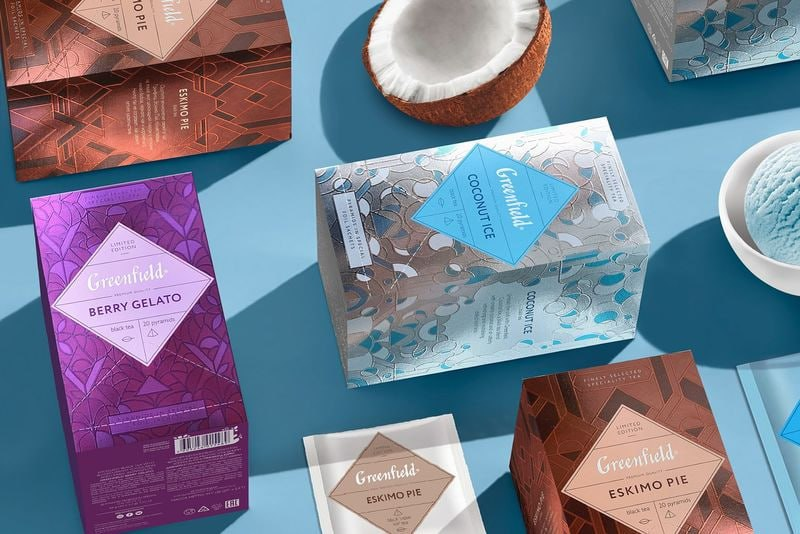

«TEA DREAMS»
Tea factory
Китайський чай «Да Хун Пао» – «Великий червоний халат». Цей чай можна назвати найдорожчим у світі. Він продається лише на аукціоні, тому ціна може досягати і 700 000 доларів за 1 кг.
Щорічний урожай чаю – близько 500 грам, адже існує лише 6 кущів цієї рослини. У виробництво йде лише перше молоде листя, частина з якого після сортування відкидається. Збирають чайне листя тільки один раз в рік з 1 по 15 травня.
 



| Назва чаю | Ціна за кг | Країна-виробник |
| Квітковий чай "Tienchi" | 170$ | Китай |
| Квітковий чай "Tienchi" | 170$ | Китай |
Смак цього чаю не залишить байдужим нікого. Все завдяки дивовижному поєднанню смаків вина і екзотичних фруктів. Після перших ковтків чаю «Да Хун Пао», відчуваєш, як легка гіркота змінюється ароматом фруктів і вина.